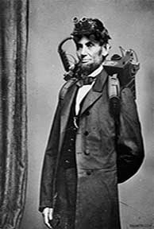
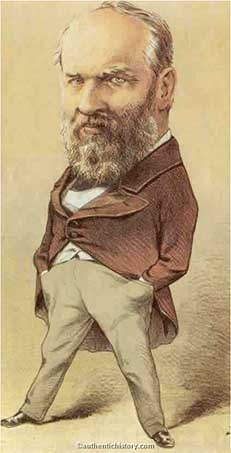
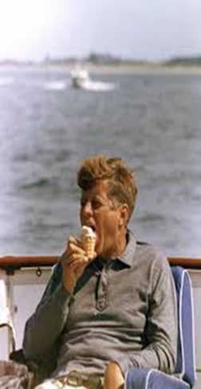
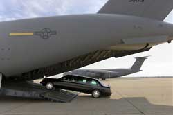

United States Secret Service's Events Timeline

- 1865-Secret Service is created in July 5, 1865 by Treasury Hugh McCulloch appointing Chief William P. Wood to lead it. Chief Wood closes over 200 counterfeiting Plants.
- >1867-Responsibilities of the Secret Service now encompasses investigating groups that plan or involved in frauds.
- 1877-Congress makes an act making duplicates of coins, gold or silver bars not authorized by the government illegal.
- 1883-Officially a department.
- 1902-Takes over full-time protection of the President from the assassination of President McKinley the year before.
- 1906-Congress gives funds to Secret Service to protect the President. While the investigation unit gets the government back millions of acres taken illegally during western expansion.
- 1908-Agents go over to the Department of Justice to soon form the nucleus of Federal Bureau of Investigation (FBI).
- 1917-Threatening the President is now a felony crime.
- 1922-President Harding makes White House Police Force.
- 1930-Secret Service absorbs White House Police Force.
- 1950-Attempt on President Truman by Advocates for Puerto Rico.
- 1951-Secret Service is permanently authorized to protect President, their immediate family, elected for presidency and vice President.
- 1963-Assassination of President Kennedy, the only President to die in Secret Service protection. His death sparked the creation of the “Beast,” the President’s armored enclosed car (National Geographic, 2004).
- 1968-Protection extended to major candidates for Presidency.
- 1970-Protection extended to diplomats.
- 1975-Ford, only President to have two different attempts, one by a “Manson Family” follower and another to cause a revolution.
- 1977-White House Police Force becomes Executive Protective Server then to become the official Uniformed Division, still currently used to this day.
- 1981-President Reagan, six shots fired close range by mentally unstable man. Only one bullet made it and another was taken by an agent. The President and the agent recovered.
- 1984-Special Division extends to investigating credit card fraud, and computer fraud.
- 1986-Secret Service engulfs Treasury Police Force.
- 1994-Congress gives authority to Secret Service to go outside of the United States for any American currency fraud abroad. President Clinton had an attempt on his life, but the motive was unknown.
- 1997-Protection of President and his family is now restricted to only 10 years, instead of lifetime protection.
- 1998-Identity Theft is recognized and stated illegal.
- 2000-National Special Security Event is made where the Secret Service has complete control over national events.
- 2001-Increased investigation power involving frauds involving the computer.
- 2003- Secret Service is officially transferred from Treasury to Department of Homeland Security.
- 2004-Barbara Riggs first female Deputy Director.
- 2005-There was an attempt on President Bush, motives unknown.
- 2006-Secret Service Electronic Crimes Task Force expands.
- 2007-First earliest protection detail for a candidate: Barack Obama.
- 2009-Three New Electronic Crimes Task Forces and first European Electronic Crimes Task Force (Rome, Italy) ("U.S. Secret Service," 2009).
- 2012-Colombia Scandal (Schmidt, 2012)
- 2013-El Salvador Scandal investigations (Jackson, 2012)
- 2013-Obama revitalizes lifetime protection after presidency for him, Bush and future Presidents (Compton, 2013).
Main Resources used: United States Secret Service, 2014; National Archives and Records Administration; Reese, 2013.
